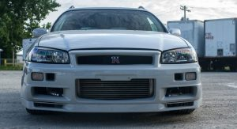
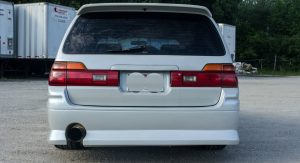
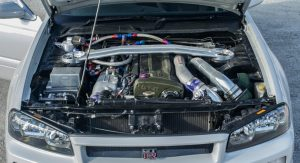
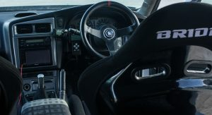
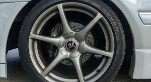

Nissan Stagea R34 GT-R Wagon Will Make You The Coolest Kid On The Block
You know what the best thing about this car is? It’s listed
By Efe Arda AKAT - July 11, 2025 AT 12.39


You know what the best thing about this car is? It’s listed for sale on eBay right here
in the United States, and specifically, in Illinois
To my knowledge, Nissan never made a GT-R version of the Nissan Stagea station
wagon, but the tuning and aftermarket industry took advantage of its Nissan Skyline
roots to convert a number of them into GT-R replicas.
We’re not only talking about cosmetics here, but also about the mechanicals of the
GT-R, as is the case with this Nissan Stagea that was previously owned and built by
Ross Petty, a well-known figure in the drifting sports world.
Petty didn’t transplant that GT-R face on the Stagea just for looks, as behind it lies a
full mechanical conversion from a R34 GT-R, with the 2.6-liter twin-turbocharged
straight-six RB26DETT engine said to be currently running on 18psi.
The current owner of the vehicle says he spent some $5k within the last year for
“maintenance and upkeep” changing among other things the old turbos with new
ones and realigning the front end for a better look.
It could be yours for $36,000 or less, as the seller is accepting offers.
If you like these kind of conversions, check out this 1972 Skyline GT-R faced Stagea and this GT-R R35-faced Stagea.
Photo Gallery




